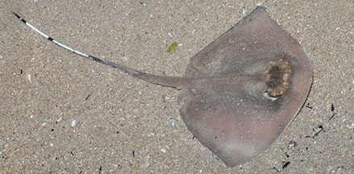
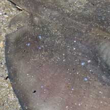
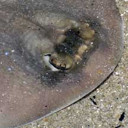
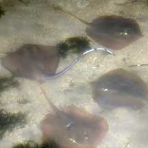

|
|
| fishes text index | photo index |
| Phylum Chordata > Subphylum Vertebrate > fishes > Order Rajiformes > Family Dasyatidae |
| Blue-spotted
stingray Neotrygon kuhlii Family Dasyatidae updated Sep 2020 Where seen? This sand-coloured stingray is sometimes seen on our Northern shores, and seems particularly common on Pulau Sekudu. It is more active at night and at high tide. It was previously known as Dasyatis kuhlii. Features: To about 40cm in diameter, those seen about 15-20cm. Body kite-shaped with rounded snout. Body colour brown to reddish brown with indistinct light blue or black spots. The spots are edged in brown and are rather inconspicuous. Usually has a 'mask' of darker brown across the eyes. It is thus sometimes also called the 'Bluespotted maskray'. Tail long and whip-like with a pale tip and dark or black-and-white bands. It has a narrow skin fold near the tail. There is usually one spine on the tail that can cause a painful wound by injecting a venom. Sometimes mistaken for a horseshoe crab and visa versa. In murky waters, these two different animals do have a similar profile, both being round and flat with a long tail. The Blue-spotted fantail ray (Taeniura lymma) has bright and prominent spots and is more commonly seen near reefs. |
 Body kite shaped with rounded snout. Black-and-white bands on the tail. Changi, Dec 07 |
|
 Blue spots are tiny and sparse. |
 Dark 'mask' across the eyes |
 A gathering of Blue-spotted stingrays and Mangrove whiprays in a sandy lagoon. Pulau Sekudu, Apr 06 |
| What does it eat? It feeds on
crabs, shrimps and other animals that live buried in the sand. Human uses: This stingray is harvested commercially to be eaten, and also taken for the live aquarium trade. It is considered one of the most commercially important rays in our region and is trawled in large quantities in the Gulf of Thailand. |
| Blue-spotted stingrays in Singapore |
On wildsingapore
flickr
|
| Other sightings on Singapore shores |
| . |
Links
References
|